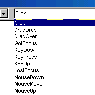

CHAPTER 4: PROGRAM WRITING
Define design time, run time, and break time.

- Design time refers to the period of development in which you carefully plan and design the user interface. You also write out the pseudocode and the actual code during design time.
- When you are testing and debugging your program, you are in the midst of run time.
- If you experience an error that stops your program, you experience what is called break time.
Steps to Develop a Program

The following steps are used in sequence for developing an efficient program:
- Specifying the problem statement
- Designing an algorithm
- Coding
- Debugging
- Testing and Validating
- Documentation and Maintenance
Specifying the Problem:
The Problem which has to be implemented into a program must be thoroughly understood before the program is written. Problem must be analyzed to determine the input and output requirements of the program. A problem is created with these specifications.
Designing an Algorithm:
With the problem statement obtained in the previous step, various methods available for obtaining the required solution are analyzed and the best suitable method is designed into algorithm.
To improve clarity and understandability of the program flow charts are drawn using the algorithms.
Coding:
The actual program is written in the required programming language with the help of information depicted in flow charts and algorithms.
Debugging:

There is a possibility of occurrence of errors in programs. These errors must be removed to ensure proper working of programs. Hence error check is made. This process is known as "Debugging".
Types of errors that may occur in the program are:
Syntactic Errors:
These errors occur due to the usage of wrong syntax for the statements. Syntax means rules of writing the program.
Example: x=z*/b;
There is syntax error in this statement. The rules of binary operators state that there cannot be more than one operator between two operands.
Runtime Errors:
These Errors are determined at the execution time of the program.
Example:
- Divide by zero
- Range out of bounds
- Square root of a negative number
Logical Errors:
These Errors occur due to incorrect usage of the instruction in the program. These errors are neither displayed during compilation or execution nor cause any obstruction to the program execution. They only cause incorrect outputs. Logical Errors are determined by analyzing the outputs for different possible inputs that can be applied to the program. By this way the program is validated.
Testing and Validating:
Testing and Validation is performed to check whether the program is producing correct results or not for different values of input.
Documentation and Maintenance:
Documentation is the process of collecting, organizing and maintaining, in written the complete information of the program for future references. Maintenance is the process of upgrading the program according to the changing requirements.
For writing up the instructions as a program in the way that a computer can understand, we use programming languages.
Debug, Compile and Execution Terms

Debugging
Debugging is the process of locating and fixing or bypassing bugs (errors) in computer program code. Programs sometimes have small errors, called "bugs," in them. These bugs can be minor, such as not recognizing user input, or more serious, such as a memory leak that crashes the program.
Compiling
Compiling is the transformation from Source Code (human readable) into machine code (computer executable). A compiler is a program. A compiler takes the recipe (source code) for a new program (written in a high level language) and transforms this Code into a new language (Machine Language) that can be understood by the computer itself. This "machine language" is difficult to impossible for humans to read and understand (much less debug and maintain), thus the need for "high level languages" such as VB.
Compiler terminology

- Compile: Colloquially, to convert a source code file into an executable, but strictly speaking, compilation is an intermediate step
- Link: The act of taking compiled code and turning it into an executable
- Build: A build refers to the process of creating the end executable (what is often colloquially referred to as compilation). Tools exist to help reduce the complexity of the build process--makefiles, for instance.
- Compiler: Generally, compiler refers to both a compiler and a "linker"
- Linker: The program that generates the executable by linking
- IDE: Integrated Development Environment, a combination of a text editor and a compiler, such that you can compile and run your programs directly within the IDE. IDEs usually have facilities to help you quickly jump to compiler errors.
Execute
Execute a program is to run the program in the computer, and, by implication, to start it to run. Process by which a computer or a virtual machine performs the instructions of a computer program
Key Points
- Program development involves multiple stages: problem specification, algorithm design, coding, debugging, testing, and documentation.
- Three main types of errors: syntactic errors, runtime errors, and logical errors.
- Debugging is the process of finding and fixing program errors.
- Compiling transforms human-readable source code into machine-executable code.